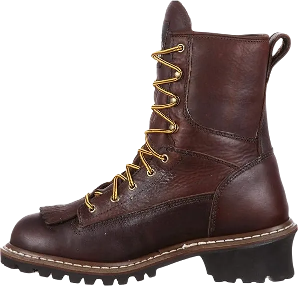
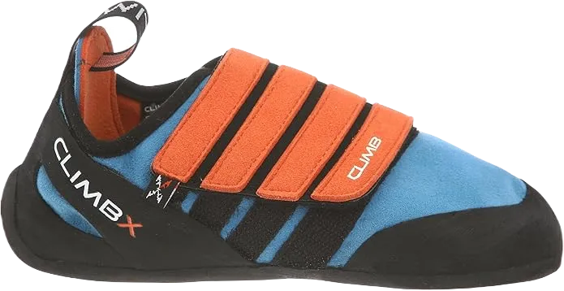

Top 12 Best Tree Climbing Shoes
When you see the title "Best Tree Climbing Shoes," the first question that may come to mind is, "What are the best boots for tree climbing?" You might also wonder if specialized boots are really necessary for climbing a tree. Regular boots certainly don't cut it when it comes to this specific activity. It's also important to address why a specialized pair of tree climbing boots is essential. For instance, if you're a gardener or using a chainsaw, you'll need high-quality tree climbing boots with top-tier chainsaw protection. Spur climbing boots are designed to minimize discomfort during climbs, protect your legs from spurs and shanks, and keep your feet supported while in the stirrup.
Not only do these boots reduce fatigue when using spurs, but they also prioritize safety, offering essential protection. These tree climbing boots with spikes are designed to provide optimal support, comfort, and safety while climbing trees and moving through the canopy.
-
#1
HAIX Protector Ultra Class 2
This brand of tree climbing boots is packed with premium features that every climber seeks. These work boots are both cut-resistant and water-resistant, ensuring durability and protection in tough conditions. They measure 8 inches in height and weigh six pounds per pair. The outer layer is made of Velour leather, which is both hydrophobic and breathable, allowing for a comfortable fit in various climates. The liner of these boots is designed to stay smooth over time, securely attached beneath the sole to prevent wrinkling.
The boots also feature a specialized climate system equipped with a micro-dry lining that releases hot air through vent holes, strategically located at the top of the boots. This system helps keep feet dry and fresh in any weather, enhancing comfort during long hours of use. Additionally, a protective steel toe cap provides cut protection, while the four-layer moisture barrier, including a Cambrelle lining, offers soft padding, shock absorption, and resistance to water and chemicals.
The boots also come with a Two-Zone Lacing System, allowing the wearer to lock in a secure fit at the bottom section while adjusting the upper part for customized comfort. The VIBRAM rubber sole is not only anti-slip and lightweight but also resistant to heat, gasoline, and oil, ensuring safety and ease of movement. With a puncture-resistant midsole that protects from shocks and moisture absorption, these boots comply with ASTM F2413-11 and CAN/CSA Z195-2014 standards for personal protection. -
#2
Clip-n-step
Next on the list are the Clip-n-Step climbing boots, known for their outstanding performance. Manufactured by Arb Pro in Italy, these boots are designed specifically for tree climbers seeking both functionality and comfort. Weighing just three pounds per pair, they are incredibly lightweight and flexible, ensuring that your feet won’t feel constricted during use, allowing for a more natural movement as you climb.
The soles of these boots are truly unique, featuring a blend of VIBRAM IBEX and MEGA GRIP technology. This combination provides superior grip on both dry and wet surfaces, making them pioneers in the tree climbing industry. The rubber used in the soles ensures excellent traction and stability, reducing the risk of slipping while climbing in various weather conditions.
One of the standout features of the Clip-n-Step boots is the built-in foot strap, which allows a direct connection to a carabiner. This innovation eliminates the need to place your foot in the eye of a sling to connect to a hand ascender, making it much easier to climb waterproof rock faces and other challenging surfaces. -
#3
EVO 2
Another excellent addition to the list, also crafted by Arb Pro in Italy, is a pair of tree climbing boots highly sought after by arborists worldwide. Weighing no more than 3 pounds, these boots offer an ideal combination of lightweight design and functionality, making them a top choice for professional work.
The design of these boots is sleek and purposeful, featuring a special "climbing zone" tip. This unique design enhances grip on trees and canopies, providing stability and control in various climbing situations. The slim build ensures ease of movement, making them a practical choice for climbers in demanding environments.
The outer layer is made of high-quality "Perwanger" leather, known for its durability and resilience. Additionally, the boots feature a rubber reinforcement profile for added protection. To ensure optimal water resistance and breathability, the boots are constructed with four layers of Event fabric, which is waterproof yet breathable, keeping your feet dry and comfortable.For excellent traction, the sole is equipped with MEGA GRIP technology, offering superior grip on different surfaces. The boots also come with a hook-less lacing system, designed to avoid damaging the ropes, providing both functionality and safety during climbs. -
#4
Scafell Lite Chainsaw
This pair of tree climbing boots hails from Europe and is crafted by the renowned brand Arboretc. While slightly heavier than some other options, weighing 6.5 pounds per pair, these boots offer exceptional durability and protection, making them a reliable choice for demanding tasks.
One of the standout features of these boots is their highest level of chainsaw protection. Certified with a Class II rating, they ensure maximum safety for the wearer when working with chainsaws, providing peace of mind for professionals in the field. Additionally, the boots are equipped with a steel-toe cap, which offers strong protection for the toes while climbing trees.
The soles of these boots are made from puncture-resistant Vibram material, designed to offer a firm grip while working on trees. The excellent traction ensures stability, reducing the risk of slipping during climbs. Like many other top-tier tree climbing boots, these are also waterproof and breathable, preventing discomfort and irritation during long hours of work. -
#5
Tango VI
These vibrant red tree climbing boots are made in Germany by the renowned manufacturer Drayer. Critics have noted that this pair is an extension of the popular "Tango Light" model. Weighing approximately 3.7 pounds per pair, these boots are a lightweight yet durable option, ideal for climbers seeking both affordability and quality.
Constructed from abrasion-proof, high-quality real leather, the boots are designed to withstand harsh conditions. Inside, they are equipped with breathable Event fabric, which creates a warm and dry environment for the feet, ensuring comfort during extended climbs. Like many top-tier tree climbing boots, these are also designed with a steel toe-cap to provide essential protection to the wearer's toes.
The boots offer flexible ankle protection, which ensures comfort and ease of movement while climbing. The soft ankle support allows for natural motion without causing discomfort. Additionally, the boots feature lateral reinforcement, which maximizes grip, especially during the foot lock technique, improving safety and control.The soles are made of Davos, a non-slip material that ensures excellent traction in both wet and dry conditions. This feature reduces the risk of slips and falls, making these boots a reliable choice for various environments. -
#6
Wesco Jobmaster
The manufacturer of these boots is WESCO, based in the USA, and they are known for using incredibly high-quality materials. These boots are crafted with full-grain leather, ensuring durability and longevity. One standout feature is that WESCO allows customers to customize their boots and have them made to order, delivered right to their doorstep. The boots also come with a rolled-leather top facing, enhancing both style and durability.
The boots are reinforced with heavy stitching, providing extra strength for tough tasks, making them a reliable choice for demanding work environments. The hard toe design adds another layer of protection, preventing injuries while climbing trees or working in hazardous conditions. Additionally, they feature OrthoLite Drilex Comfort foam slip-in inserts, ensuring maximum comfort even during long hours of wear, a detail that many workers appreciate.
The insole is made from full leather, which is sweat-resistant, helping to avoid discomfort and odor buildup during use. The midsole is also crafted from high-quality leather, adding to the overall comfort and support. The VIBRAM soles provide heavy traction, making the boots slip-resistant and secure in various terrains. The design is finished with solid brass studs and eyelets, adding durability and a refined touch to the boots' construction. -
#7
Mad Monkey
This brand of tree climbing shoes is from the renowned Mad Rock, a company famous for producing high-quality footwear. Mad Rock is known for utilizing the latest technology in their manufacturing process, which has contributed to the popularity of their products. Unlike work boots, this pair is specifically designed for kids and comes in a vibrant blue and yellow color, making them both functional and visually appealing for young climbers.
Crafted from fine-quality leather, these tree climbing shoes are built to last for years, even for active and adventurous children. The durable leather ensures that the boots can withstand wear and tear, providing parents peace of mind knowing their kids’ shoes will hold up over time.The shoes feature a sole with a thickness of 3.8 mm, providing solid strength and support during climbs. The adjustable straps incorporated into the design allow for a customized fit, ensuring the boots stay secure and comfortable on your child’s feet.
Weighing just 2 pounds per pair, these lightweight shoes are an excellent choice for young climbers. Their versatile design also makes them suitable for other activities like gym workouts, sports, and bouldering, making them a practical and multi-purpose option for kids. -
#8
Bush whacker
The Viking tree climbing boots are an excellent choice whether you're climbing for fun or for work. Manufactured with all the essential features, these boots are recognized as one of the best options for arborists, providing superior grip and comfort during climbs. Their sleek design and functionality make them ideal for tree climbing enthusiasts and professionals alike.
In terms of design, these boots feature an ergonomic insole that enhances comfort and foot support. The upper part of the boots is made with a cotton canvas lining blended with SBR and NR, which aids in making tree climbing easier. The rubber upper also adds the benefit of being both water and oil-resistant. While the material may feel slightly rough, it does not cause any discomfort or harm to the feet.
The boots are equipped with a cushioned heel made of nylon, which helps to keep out dust and debris. This air-cushioned heel is designed to protect the Achilles tendon and the metatarsal ankle, ensuring that the wearer’s feet are supported and protected throughout the climb. -
#9
CRAMPONS NON-SLIP
These tree climbing boots, designed by the brand Lixada, are lightweight and highly portable, weighing just 15 ounces. Offering 96 percent comfort, they are ideal for both work and recreational climbing. Their compact size makes them easy to pack and carry in a travel bag, perfect for those on the go.
The design features a convenient Velcro strap, allowing the wearer to easily take the boots on and off. Additionally, the boots are equipped with a 2.5 mm stainless steel plate that provides protection to the foot, ensuring safety while climbing.One of the standout features is the inclusion of twelve manganese steel teeth. These high-strength teeth provide exceptional grip and hold the boots securely if the wearer slips from the tree. This feature enhances safety during climbs.
Another unique element is the welded flex chain, which sets these boots apart from other brands. This chain can be pulled in case of an emergency, adding an extra layer of security for the wearer in challenging situations. -
#10
MUCKSTER ll LOW
These tree climbing shoes are a special edition from MUCK BOOT, a company renowned for producing high-quality footwear. When it comes to the best climbing shoes for kids, MUCK BOOT stands out for offering excellent options. These shoes are ideal for climbing low-level trees and are also perfect for outdoor activities during the winter months.
Crafted from water-resistant materials, these boots provide protection against moisture, allowing individuals to climb confidently even on damp trees. The construction features durable nylon and 8mm CR flex foam, ensuring comfort and safety while navigating wet conditions.
Stability is a key feature of these tree climbing shoes, achieved through the use of a bob tracker outsole. Weighing only four pounds, these boots are lightweight, offering 94 percent comfort and protection, making them an excellent choice for young climbers seeking both performance and safety in their footwear. -
#11
DEFY tree climbing boots
The Defy tree climbing boots, introduced by EVOLV, have quickly gained popularity in the footwear market since the company's establishment in 2003. Despite being a relatively new brand, EVOLV has rapidly made a name for itself as a leading manufacturer of climbing shoes and other footwear. Initially starting with a limited product range, the brand has expanded significantly, becoming well-known for its quality and innovation.
These tree climbing boots feature a unique and durable design, characterized by their asymmetric shape, which enhances performance and comfort during climbs. The upper layer is crafted from high-quality synthetic materials and comfortable nylon, providing a plush feel that supports the wearer while navigating trees.
The front toe area is reinforced with VTR rands, adding thickness and safety to this critical section of the boot. This design feature offers 89 to 90 percent protection for the wearer's toes, ensuring safety during climbs. Weighing just five pounds, these boots are lightweight, making them easy to carry and maneuver while climbing both low-level and taller trees. -
#12
Husqvarna Rubber Loggers
.webp)
This pair of tree climbing boots is a handcrafted addition to the lineup, made from high-quality rubber that ensures maximum protection while climbing trees. The rubber used in their construction is both water and oil-resistant, similar to many other tree climbing boots on the market.
The design features reinforcements on the upper side, including the toe area and around the sole, enhancing durability and protection. The boots come with lacing at the back, along with a newly designed heel cap that facilitates easy on-and-off wear. Additionally, the canvas lining sole is equipped with studs for added traction and stability during climbs.
For safety, these boots include chainsaw protection, providing an essential safety feature in case of accidental falls from the tree. Buyers also have the option to purchase an extra felt liner, which helps keep the feet dry during prolonged wear. Weighing an average of 4 pounds, these boots deliver 80 percent comfort and protection, making them a solid choice for climbers.